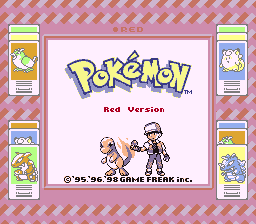
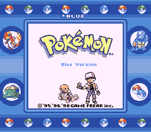
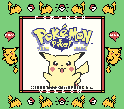

  
Generation 1
Generation 1 nicknamed 'Gen 1' by the community is the first Generation of the Pokemon videogame series released by Gamefreak. This Generation consists of three games Red Version, Blue Version and Yellow version. The yellow version differentiates itself from the red and blue by changing the traditional starters with a Pikachu. The traditional starters of this generation are Squirtle, Charmander and bulbasaur. Team Rocket led by Giovanni is the main evil team of this generation. Giovanni is also the leader of the final Gym in these games. The First gen has gained quite a cult following in the pokemon community with a small portion of the community hailing it as the best game in the series, this is due to the retro designed sprites and music in this generation. Another reason this generation is much more popular is for the chatracters present in the story of this game.Characters such as Red and Blue being the main antgonist and protagonist aswell as Brock and Misty who were popularised through the Anime based of this game series give the players of this generation a nostalgic feeling that keeps the fans of this generation playing and is a key factor in the retaining of the Generation 1 fanbase today. Generation 1 released on the Gameboy Colour and the Super Game Boy nintendo systems and released in 1998 Internationally and in 1996 in Japan.
Gameplay Mechanics
Generation 1 Introduces many of the core Gameplay mechanics which have remained to this day. These games are now considered by most to be the "Standard Formula" of pokemon games. The following gameplay Mechanics have their origins routed in Generation 1
- The Players ability to hold six pokemon in their party at any one time and to use all six in a battle.
- A PC based storage system where you can store pokemon not in use labelled "Bills pc"
- 151 New Pokemon many of which related to eachother through evolution
- A battle System featuring move types, pokemon types, moce power and accuracy
- The Pokemon league having you challenge four pokemon masters and one leader to take the title of pokemon champion.
Region
Generation 1 takes place in the Kanto region, the regions geography and major cities are based off the real Japanese region of Kanto including a large mountain range which seperates the Kanto region from the rest of Japan. It is important to note that in the Generation 1 remakes off FireRed and LeafGreen the Sevii Islands are a sub regioon of Kanto that come into play after the game has been completed. They are only accessible by ferry from Vermillon city and can only be reached after defeating the elite four. The Sevii islands are an archipelago of nine small islands where legendary pokemon can be found.
Legendaries
The Legendary Pokemon of Generation 1 are Zapdos, Articuno, Moltres and Mewtwo. Zapdos, Articuno and Moltres make up a trio of birds representing Fire, Water and Electricity. The three Birds are all obtainable before you battle the Elite Four and are found residing in the power plant for Zapdon, the Seafoam islands for Articuno and Victory Road to find Moltres. Another legenary is obtainable in this game after you have defeated the Elite four you can hunt for the Legendary Mewtwo in the Unknown Dungeon.